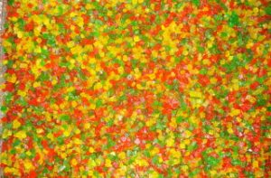

Fruta Escurrida
Producto a partir de sandilleja, utilizado en los panes de navidad
Producto a partir de sandilleja, utilizado en los panes de navidad
Producto a partir de sandilleja, con un baño de glaseado
Higos negros desecados al sol
Higos, Zapallos, Batata
Membrillo, higos, durazno, tomate
Arrope Chañar, Uva, Tuna
El arrope de chañar ayuda a malestares tales como el asma, tos y gripe gracias a sus propiedades de efecto expectorante.Tanto el arrope de chañar y tuna, se utiliza como endulzante natural, para aquellas personas alergicas a la miel. El arrope de tuna posee una amplia variedad de nutrientes y a su vez es de gran ayuda para tratar múltiples enfermedades estomacales, resfriados y colesterol alto. lo elaboramos con hugos de tuna (chumbo) seleccionados manualmente. La tuna proviene del cactus que crece en los suelos arenosos, muy común en las regiones del Norte y Cuyo